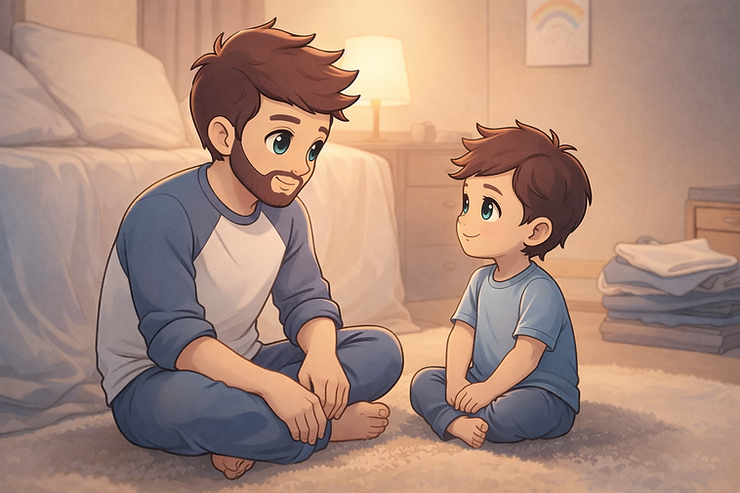

A few weeks ago, I had one of those parenting moments that quietly rearranges your priorities. I spoke about it on a bit The DadDHD Podcast later that week. We were walking into school when my son tripped on the sidewalk and skinned his knee. It was not a big injury, but it felt huge to him. He froze, then the tears and big emotions came fast. My first instinct was urgency. We were running late. People were starting to gather around us (which is one thing my son does not like). I could feel my own stress spike as I said things like, “You are okay, we need to keep moving.” But then I caught myself. I saw him looking up at me, not just for help with his knee, but for cues about what to do with the pain and the overwhelm. So I stopped. I knelt down right there on the concrete. We took a breath together. I let people around us know that we had it handled, then I helped him up, checked his knee, and stayed present until his body settled. In that moment, I realized he was not learning how to avoid falling. He was learning how we respond when things hurt, when plans get disrupted, and when emotions show up before we are ready.
The Reality of Parenting with ADHD
Here's the thing about parenting with ADHD: we're supposed to be teaching our kids how to manage their emotions, how to regulate when things get overwhelming, how to pause and respond instead of react. But for those of us with ADHD, emotional regulation is one of our biggest struggles. We feel things intensely. We go from zero to a hundred in seconds. We have emotional dysregulation baked into our neurology. So how are we supposed to model something we're still figuring out ourselves?
The truth is, we don't need to be perfect at emotional regulation to teach it. We just need to be honest, self-aware, and willing to show our kids what it looks like to be human and keep trying. And honestly, that might be the most valuable lesson of all.
The ADHD Emotional Regulation Challenge
Let’s start by acknowledging what we’re working with. Emotional dysregulation is a core feature of ADHD, not a character flaw or a parenting failure. Our brains process emotions differently. We feel things more intensely, we have trouble modulating our responses, and we struggle with that pause between feeling and reacting.
For neurotypical folks, there's usually a buffer between "I'm frustrated" and "I'm acting on that frustration." For us? That buffer is often non-existent or incredibly short. We're impulsive with our emotions just like we're impulsive with everything else. Add in the stress of parenting (which is already emotionally demanding), sleep deprivation, sensory overload from a chaotic household, and the constant executive function demands, and it's no wonder we sometimes lose it over a missing shirt.
And if you're parenting neurodivergent kids (which many of us are, given the genetic component of ADHD), you're dealing with their emotional dysregulation on top of your own. It's like two emotional tornadoes colliding, and someone has to be the calm in the storm. Except you're also a tornado. So how does that work?
You Don't Have to Be Perfect, You Just Have to Be Real
The pressure to be a perfect role model can be paralyzing. We look at parenting advice that says things like "stay calm," "model emotional regulation," "be the thermostat not the thermometer," and we think, "Great, I'm already failing because I definitely became the thermometer in that situation."
But here's what I've learned: our kids don't need us to be emotionally perfect. They need us to be authentic and accountable. They need to see what it looks like when someone struggles with their emotions and then works to repair and do better. That's actually a more valuable lesson than never struggling in the first place, because guess what? They're going to struggle. We're teaching them what to do when that happens.
When we mess up (and we will), we can show them:
- How to recognize when we've lost control
- How to apologize sincerely
- How to repair relationships after conflict
- How to reflect on what triggered us
- How to try a different approach next time
That's real emotional intelligence. Not perfection, but growth.
Strategies for Managing Your Own Emotions
While we don't need to be perfect, we can absolutely work on getting better at recognizing and managing our emotions. Here are some strategies that can help:
1. Name the Emotion
When you feel yourself getting activated, try to pause (even for just a second) and name what you're feeling. "I'm getting frustrated." "I'm feeling overwhelmed." "I'm anxious about being late." Just naming the emotion can create a tiny bit of distance between you and the feeling, which gives you a slightly better chance of responding instead of reacting. You can even do this out loud in front of your kids. "I'm noticing I'm feeling really frustrated right now." This models emotional awareness and gives them language for their own feelings.
2. Identify Your Triggers
What situations consistently push your buttons? For me, it's time pressure (we're going to be late!) and repetitive questions (especially when I'm trying to focus on something else). For you, it might be whining, sibling fighting, messes, or transitions. Once you know your triggers, you can:
- Prepare for them in advance
- Put extra supports in place during high-trigger times
- Communicate to your kids that "mornings are hard for mom/dad, so I need everyone's patience"
3. Use the HALT Check
Before you respond to a situation, do a quick HALT check:
Am I Hungry, Angry, Lonely, or Tired? These states make emotional regulation exponentially harder. If the answer is yes to any of these, that's valuable information. Maybe you need a snack, a minute alone, or just the awareness that you're running on empty and need to be extra careful.
4. Build in Breaks
You cannot pour from an empty cup, and ADHD brains drain faster than most. Give yourself permission to take breaks. Even five minutes of sitting in the car before you go inside, locking yourself in the bathroom for a few deep breaths, or putting on a show so you can decompress for twenty minutes. It's not selfish. It's maintenance.
5. Practice the Pause
This is the holy grail of emotional regulation and also the hardest thing for ADHD brains. When you feel yourself getting activated, try to insert even the smallest pause before responding. Take a breath. Count to three. Step into another room for a moment. I'm not going to lie, this is really hard. Our brains want to react immediately. But even building in a one-second pause can sometimes be enough to choose a better response.
6. Have a Reset Ritual
When you do lose it (because you will, we all do), have a ritual that helps you reset. Maybe it's splashing cold water on your face, doing some jumping jacks, stepping outside for fresh air, or texting a friend. Find what helps you come back to center so you can repair the situation.
Modeling Emotional Regulation for Your Kids
Beyond managing our own emotions, we can actively model healthy emotional regulation for our children. Here's what that can look like:
Show Your Work
Instead of trying to hide your emotional process, let your kids see it. When you're using a coping strategy, narrate it. "I'm feeling really frustrated, so I'm going to take some deep breaths." "I need a minute to calm down before we talk about this." "That made me angry, but I'm going to wait until I'm calm to decide how to respond."
This teaches them that:
- Everyone has big emotions
- There are tools to manage those emotions
- It's okay to take time to calm down
Repair When You Mess Up
When you yell, overreact, or lose your cool (and you will), come back and repair. Apologize. Explain what happened. Model accountability. "I'm sorry I yelled about the shirt. I was feeling stressed about being late, and I didn't handle it well. That wasn't okay, and I'm going to work on managing my frustration better."
This is so powerful. You're showing them that making mistakes doesn't make you a bad person, and that relationships can be repaired. You're also modeling genuine apology, which is a skill they'll need their whole lives.
Validate Their Emotions Too
When your child is dysregulated, resist the urge to immediately fix it or minimize it. Validate what they're feeling first. "I can see you're really upset about this." "That sounds really frustrating." "It makes sense that you're disappointed."
This is especially important if you have neurodivergent kids who are also dealing with emotional dysregulation. They need to know their feelings are valid, even when they're big and overwhelming.
Create a Family Emotion Vocabulary
Help your kids develop language for their emotions beyond "happy," "sad," and "mad." Use emotion wheels, read books about feelings, and regularly talk about the nuances of emotions. When they can name what they're feeling, they have more power to manage it.
Practice Together
Emotional regulation skills need practice, just like any other skill. When everyone is calm, practice coping strategies together. Deep breathing exercises, progressive muscle relaxation, counting strategies, visualization. Make it fun. Make it normal. Then when the big emotions hit, you have a shared toolkit to draw from.
When You Need More Support
Here's the honest truth: managing your own emotional dysregulation while trying to parent effectively is genuinely hard work. If you're struggling, that's not a moral failing. It's a sign that you might benefit from additional support.
ADHD coaching can help you develop personalized strategies for emotional regulation that work with your specific brain and life circumstances. A coach can help you identify your triggers, create sustainable routines, and build the skills you need to show up as the parent you want to be.
Therapy, particularly DBT (Dialectical Behavior Therapy), can also be incredibly helpful for learning emotional regulation skills. Medication can make a significant difference in emotional reactivity for many people with ADHD. There's no shame in using any or all of these supports. They're tools, and tools are good.
The Long ADHD Parenting Game
I think about that moment on the sidewalk a lot. At first, all I could see was how close I came to rushing him through his pain because of my own stress. Later that day, I went back to it with him. I told him I noticed how hard that moment was for both of us. I shared that I felt overwhelmed and almost missed what he needed most, which was for me to slow down and help him feel safe. I let him know I am still learning how to pause when my stress shows up, and that I want to keep practicing that together.
You know what he said? “It’s okay, Dad. My knee really hurt, but you helped me so it's okay.”
That is the thing about being real with our kids. They are paying attention, not just to what we do wrong, but to how we repair. They do not need perfection. They need presence, honesty, and the lived example that when things hurt, physically or emotionally, we can stop, care for ourselves and each other, and keep growing from there.
You're not going to nail emotional regulation every single time. You're going to have days where you react instead of respond. You're going to lose your patience. You're going to feel like you're modeling all the wrong things. That's being human. That's being a parent. That's being someone with ADHD trying their absolute best in a world that's not designed for the way our brains work.
What matters is that you keep showing up. You keep trying. You keep modeling repair, accountability, and growth. That's the example that will stick with your kids. Until next time! Stay mindful and stay healthy!